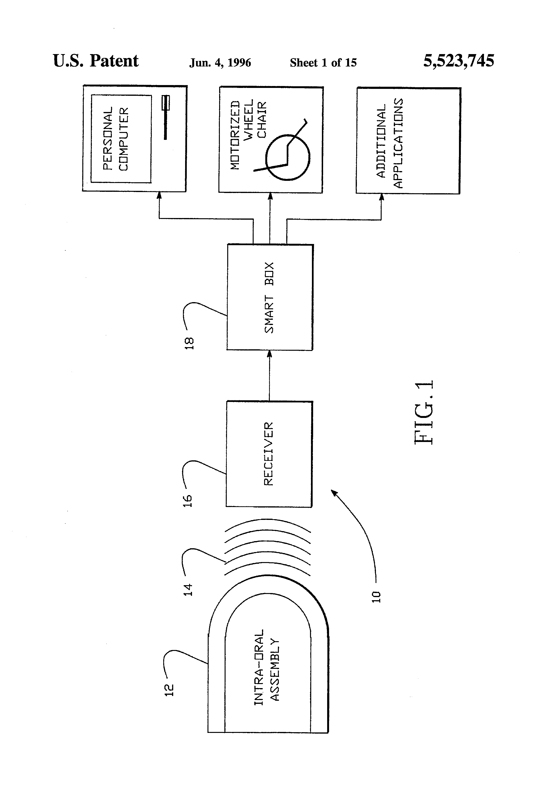
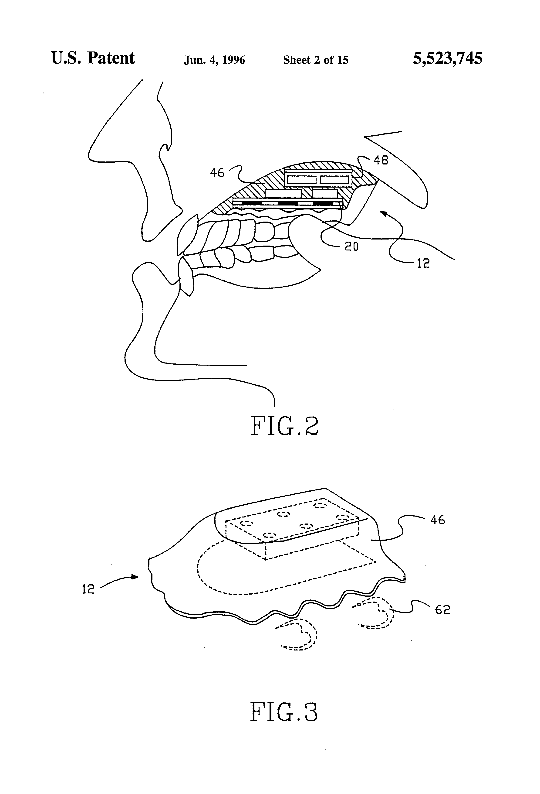

Tongue Touch Keypad
The intraoral dental retainer with a nine-key membrane keypad that let quadriplegics control computers by touching their tongue to the roof of their mouth.

Overview
The Tongue Touch Keypad (TTK) was a hands-free computer input device consisting of a custom-fitted intraoral dental retainer modified to include a nine-key membrane keypad, a digital encoder, and a low-power radio transmitter. Mounted against the roof of the mouth like an orthodontic retainer, the keypad was operated by touching different positions on the keypad with the tongue. Each key press was digitally encoded and transmitted via a low-frequency (approximately 2 MHz) amplitude-modulated magnetic flux field to a receiver positioned near the user's head. The companion Smartlink Controller decoded the signals and translated them into text input, mouse cursor movement, or equipment control commands — supporting an Apple Macintosh computer, powered wheelchair, television, VCR, telephone, page turner, and other household devices.
The TTK concept originated at Zofcom Inc., a small Palo Alto company founded by Daniel Fortune, with SBIR Phase I funding in 1984 ($50,000 from HHS) for 'Tongue Activated Computer Control for the Handicapped.' A Phase II award followed in 1987 ($147,000 from NIH). In 1990, the U.S. Department of Education awarded a Phase I SBIR ($29,520) specifically to adapt the TTK and Smartlink System for educational applications. The FDA cleared the 'TongueTouch Keypad and Zofcom Control System' as a Class II powered environmental control system in April 1991 (510(k) K911101). By 1994, the successor company New Abilities Systems received FDA clearance for the 'UCS 1000 with TongueTouch Keypad Wheelchair' (K932786), integrating tongue control directly into powered wheelchair operation.
User adoption was small but life-changing. Stacy Bibb, a young man with severe athetoid cerebral palsy and quadriplegia, began using the TTK in 1991 at age 17 and relied on it for over 25 years. In his mother's words, 'He took to the TTK like a fish to water.' Approximately 70 quadriplegic users ultimately received TTK devices before the company went bankrupt. When it did, users like Stacy lost their ability to communicate beyond stick-out-tongue-for-yes for three full years until volunteer engineers built a replacement.
Deep dive
The TTK's lineage traces back to work at Thomas Jefferson University in the early 1980s. Philip Katz, Henry S. Brenman, Louis D. Lowry, and Harold Schwartz developed a series of intraoral devices including an artificial larynx and a tongue-activated environmental control switch (US Patent 4,550,427, 1985; US Patent 4,605,927, 1986; US Patent 4,783,656, 1988). Their key insight: since lingual function is usually preserved in quadriplegia (the tongue is connected to the brain via cranial nerves, not the spinal cord), an intraoral switch on a dental appliance could bypass physical disability entirely. The Thomas Jefferson device used a single pair of Ag-AgCl contacts bridged by the tongue to activate an intraoral FM transmitter sending control signals to an external receiver. But a single switch is inherently limiting — it can only do one thing. Zofcom's breakthrough was to scale this to a full nine-key membrane keypad integrated into a palatal splint, transforming the tongue from a binary switch into a multi-channel input organ.
The TTK was fabricated as a custom-fitted dental retainer, typically molded from acrylic polymer, shaped to fit comfortably against the roof of the wearer's mouth. Embedded within the palatal surface was a nine-key membrane keypad — essentially a miniature version of the membrane switches found in early electronic calculators and computer keyboards, but sized and contoured for tongue operation. The keypad was connected to a digital encoder chip that assigned a unique binary code to each key press. A low-power radio transmitter — operating via magnetic flux field coupling at approximately 2 MHz using an air-core inductor coil wound around the periphery of the retainer — broadcast the encoded keystrokes wirelessly to an external receiver. The use of magnetic near-field transmission (rather than conventional RF) was a deliberate design choice to minimize power consumption while maintaining reliable signal through the oral tissue. The entire electronic assembly was potted in medical-grade silicone adhesive to protect it from saliva and the hostile intraoral environment. Battery power came from small lithium or silver oxide cells embedded in the retainer. An important power-saving innovation was a delay circuit that required continuous tongue contact for a threshold duration before activation, preventing inadvertent key presses and extending battery life.
Operating the TTK required learning a new bodily vocabulary. The nine keys were arranged on the palatal retainer in a grid pattern, and the user learned to touch specific positions on the roof of their mouth with the tip of their tongue. Because the tongue rivals the fingers in tactile sensitivity, spatial awareness, and speed, users could develop remarkable proficiency. The Smartlink Controller translated key presses into different modes: in text-entry mode, each key corresponded to a letter, word, or phrase; in mouse mode, directional keys moved the cursor; in environmental control mode, keys mapped to appliances and devices. The SBIR abstract from 1990 explicitly claimed that the text entry rate of the TTK was 'superior to other computer access input devices which are currently available to the disabled.' Crucially — and this was a major psychological factor — the TTK was 'essentially invisible when worn.' Unlike head pointers, mouth sticks, or external switch arrays that visibly marked the user as disabled, the TTK was hidden inside the mouth. For disabled children and teenagers especially, this invisibility was transformative: it reduced self-consciousness and improved willingness to engage with technology in social settings.
Stacy Bibb, born with severe athetoid cerebral palsy that left him quadriplegic and nonverbal at 80 pounds with the developmental abilities of a 4-month-old, received his first TTK in 1991 at age 17. Before the TTK, he could only make noises with his tongue. With the TTK, he could type messages, play video games, control his wheelchair, and operate a computer. His mother Portia recalled, 'I was so proud of him!' The device served him for over 25 years through multiple technology upgrades — from infrared to Bluetooth. Approximately 70 other quadriplegic individuals received TTK systems. The human cost of specialized assistive hardware's fragility became apparent when New Abilities Systems went bankrupt: users like Stacy lost their voice entirely, reduced to binary communication (stick out tongue for 'yes,' close mouth for 'no') for three years until a volunteer game designer named Jason Eldred built a replacement using a 99-cent Halloween mask and a metal contact, later refined by UCSD engineering students.
The TTK established the fundamental paradigm — intraoral, tongue-operated, wireless, multi-channel — that every subsequent tongue-computer interface has followed. The Georgia Tech Tongue Drive System (2008–present, Maysam Ghovanloo) replaced the physical keypad with a magnetic tracer on the tongue and Hall-effect sensors on a headset, trading mechanical contacts for magnetic tracking — but preserved the core insight that the tongue is a high-bandwidth input channel. The Augmental MouthPad (2024, MIT spinoff) returns to the palatal retainer form factor but adds a touch-sensitive trackpad and IMU for continuous cursor control. MIT's MouthIO platform (2024) generalizes the concept into a fabrication toolkit for custom intraoral interfaces. In a 2008 NBC News article, Ghovanloo's team explicitly acknowledged the TTK as predecessor: 'A Palo Alto, Calif.-based company, newAbilities Systems Inc., has already designed a nine-button keypad placed on the roof of the mouth to control electronics.' The TTK's story also serves as a lasting warning about the sustainability challenges of niche assistive hardware — when the company fails, the users are the ones who lose their voice.
Team & pioneers
- Daniel Fortune. Founder of Zofcom Inc. and Principal Investigator on all three SBIR awards (1984, 1987, 1990). Led development of the Tongue Touch Keypad and Smartlink System.
- Zofcom Inc. / Zofcom Systems Inc.. Palo Alto, CA (3962 Nelson Court). Small company (1–4 employees, under $500K revenue) that developed the TTK. Received SBIR awards from HHS/NIH (1984, 1987) and Department of Education (1990). Filed US Patent 5,523,745 (1991/1996).
- New Abilities Systems Inc.. Successor company to Zofcom. Filed and received FDA 510(k) K932786 for the 'UCS 1000 with TongueTouch Keypad Wheelchair' in 1994. Later went bankrupt, leaving ~70 TTK users without support.
- Philip Katz, Henry S. Brenman, Louis D. Lowry, Harold Schwartz. Thomas Jefferson University. Developed the intra-oral lingually operated switch and FM transmitter (US Patents 4,550,427, 4,605,927, 4,783,656, 1983–1988) that served as the foundational technology precursor to the multi-key TTK.
- Jason Eldred. Professional game designer (worked on The Last of Us Part II for Sony PlayStation 4). In 2020, when Stacy Bibb's Bluetooth TTK failed due to COVID manufacturing delays, Eldred built a replacement two-button tongue-touch system in one week using a 99-cent Halloween mask.
Media

Sources
- SBIR.gov — 'ADAPTATION OF TONGUE TOUCH KEYPAD AND SMARTLINK SYSTEM TO EDUCATIONAL APPLICATIONS' (Zofcom Inc., 1990, DoEd Phase I, $29,520). Full abstract with technical description of the nine-key membrane keypad, digital encoder, radio transmitter, and Smartlink Controller.
- SBIR.gov — Zofcom Inc. Company Portfolio. Shows Phase I award in 1984 and Phase II award in 1987 for 'Tongue Activated Computer Control for the Handicapped.'
- FDA 510(k) K911101 — 'TONGUETOUCH KEYPAD AND ZOFCOM CONTROL SYSTEM' (Zofcom Inc., cleared April 25, 1991). Class II powered environmental control system.
- FDA 510(k) K932786 — 'UCS 1000(TM) WITH TONGUETOUCH KEYPAD WHEELCHAIR' (New Abilities Systems Inc., cleared March 28, 1994).
- US Patent 5,523,745 — 'Tongue activated communications controller' (Zofcom Systems Inc., filed 1991, issued 1996). Detailed technical description of the intraoral keypad, magnetic flux coupling transmitter, and multi-device controller.
- US Patent 4,783,656 — 'Intra-oral control unit and system' (Thomas Jefferson University, filed 1986, issued 1988). Precursor: single-switch intraoral FM transmitter on a dental appliance for environmental control.
- Mountain Shadows Support Group — 'Tongue-Touch Keypad Gives Voice to Resident' (Constant Contact). Stacy Bibb's story: 25+ years with the TTK, starting in 1991 at age 17.
- Mountain Shadows Support Group — 'Come Closer and Touch His Cheek' (2023). Details about the TTK as a dental retainer device; the company's bankruptcy; Stacy's three years without the device.
- NBC News / Associated Press — 'Turning the tongue into a computer control pad' (Aug 24, 2008). Describes Georgia Tech Tongue Drive System and explicitly references newAbilities Systems Inc.'s nine-button keypad as predecessor.
- Huo & Ghovanloo (2014) — 'An Arch-Shaped Intraoral Tongue Drive System with Built-in Tongue-Computer Interfacing SoC,' Sensors 14(11):21565. Includes photograph of the original TTK dental retainer alongside newer tongue-drive devices.